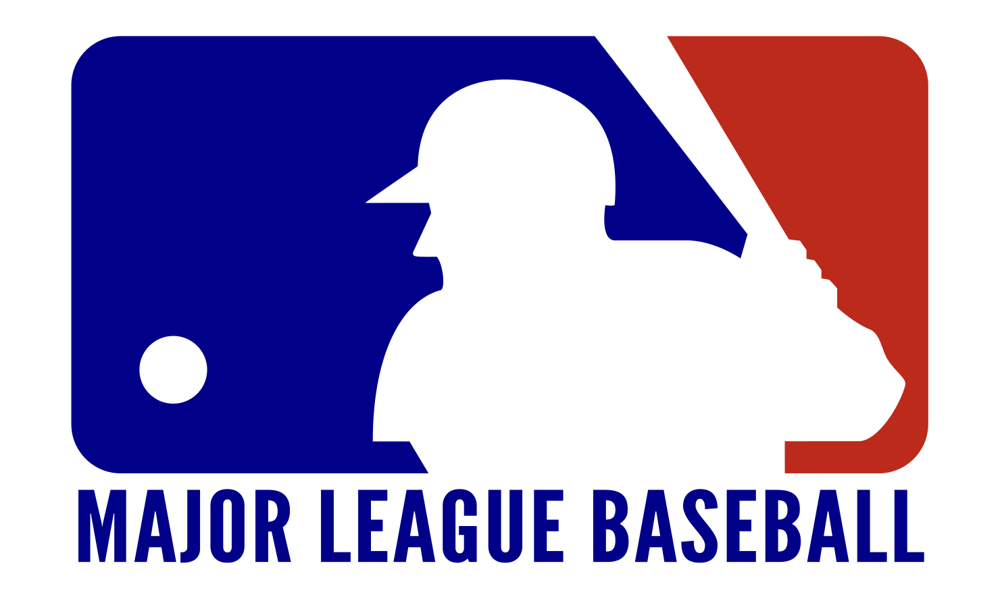
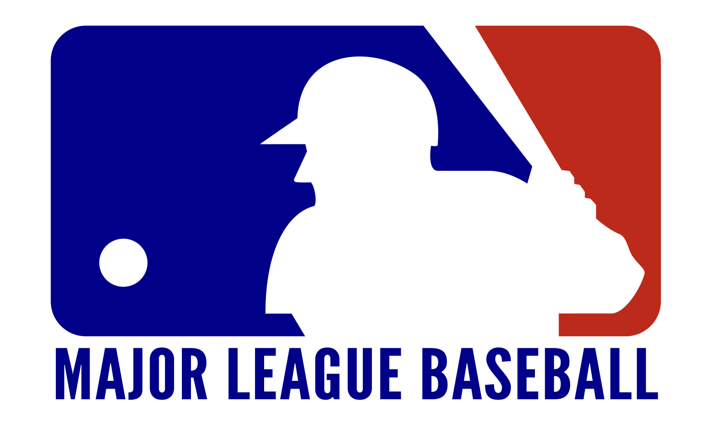

Sports!
Baseball is a great sport, but sometimes it can get boring to just watch. I grew up cheering on the Houston Astros, especially when they won the 2017 world series. During COVID, though, the Astros aren't uh... doing so well.
Baseball is a great sport, but sometimes it can get boring to just watch. I grew up cheering on the Houston Astros, especially when they won the 2017 world series. During COVID, though, the Astros aren't uh... doing so well.
